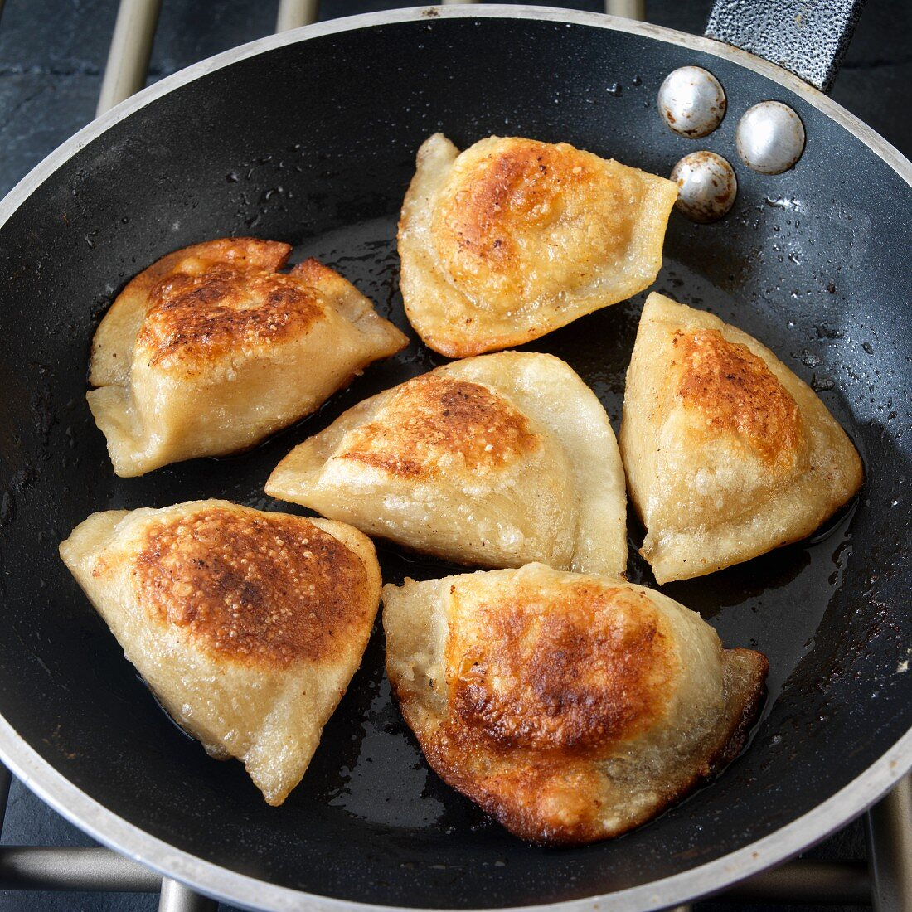

Pirogi

Ingredients
- Dough
- Salt
- Pepper
- Garlic powder
- Butter
- Olive oil
- Rosemary
Steps
- Season well all sides of your steak with salt, pepper and garlic powder.
- Heat up your cast iron and add a good amount of olive oil. Gently put the steak there for two minutes.
- Turn around your steak and let it roast for one minute. Add butter and pour some of it on the steak when it melts.
- Add rosemary and leave it all for another minute.
- Let the meat rest for five minutes at room temperature.
- Cut it to thin slices and enjoy your meal.
Bon Appétitt
And a video for reference
back